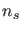
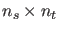
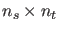
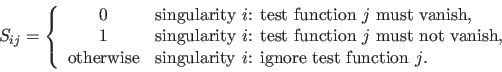

Next: User location Up: Singularity handling Previous: Multiple test functions Contents
To represent all singularities we will introduce a singularity matrix (as in [26]). This matrix is a compact way to describe the relation between the singularities and all test functions.
Suppose we are interested in  singularities and  test functions which
are needed to detect and locate the singularities.
Then let
test functions which
are needed to detect and locate the singularities.
Then let  be the  matrix, such that:
be the  matrix, such that:
|  | (30) |